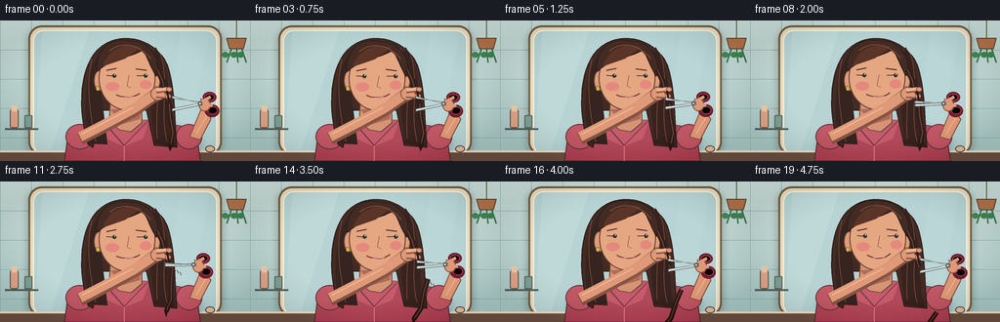
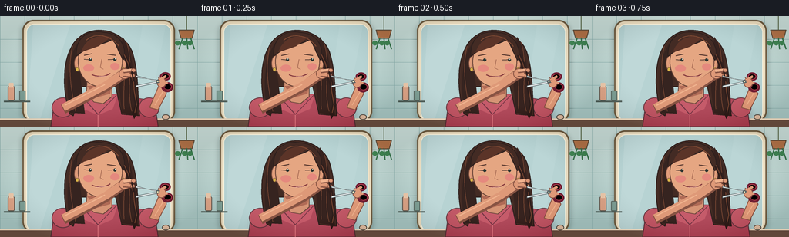
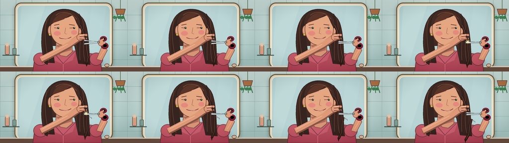

CODING AGENTS AS PIXEL WORLD MODELS
traex/GPT-5.6-Sol · motion_rationality_0036
点击播放 · 原生 RGB 像素
逐轮保存的候选
回放视频、检查图与代码变化。
每份候选均可单独播放。实际图片检查记录在下方工具轨迹中。
候选 01播放与检查图
点击播放 · 原生 RGB 像素


展开代码变化
--- 上一保存版本
+++ 本次保存版本
@@ -0,0 +1,249 @@
+from pathlib import Path
+import math
+import numpy as np
+from PIL import Image, ImageDraw, ImageFilter
+import artifact_io
+
+W,H,N = 256,144,20
+S=4
+
+def sc(v): return int(round(v*S))
+def box(b): return tuple(sc(v) for v in b)
+def pts(p): return [(sc(x),sc(y)) for x,y in p]
+
+def ellipse(d,b,fill,outline=None,width=1):
+ d.ellipse(box(b), fill=fill, outline=outline, width=sc(width) if outline else 1)
+def line(d,p,fill,width=1,joint='curve'):
+ d.line(pts(p), fill=fill, width=sc(width), joint=joint)
+def poly(d,p,fill,outline=None,width=1):
+ d.polygon(pts(p), fill=fill)
+ if outline: d.line(pts(p+[p[0]]), fill=outline, width=sc(width), joint='curve')
+def rr(d,b,r,fill,outline=None,width=1):
+ d.rounded_rectangle(box(b), radius=sc(r), fill=fill, outline=outline, width=sc(width))
+
+def bezier(p0,p1,p2,p3,n=24):
+ out=[]
+ for t in np.linspace(0,1,n):
+ u=1-t
+ out.append((u**3*p0[0]+3*u*u*t*p1[0]+3*u*t*t*p2[0]+t**3*p3[0],
+ u**3*p0[1]+3*u*u*t*p1[1]+3*u*t*t*p2[1]+t**3*p3[1]))
+ return out
+
+def draw_bg(im, frame):
+ a=np.array(im)
+ # cool tiled bathroom wall with warm reflected center
+ for y in range(H*S):
+ yy=y/(H*S)
+ c=np.array([207,225,220])*(1-yy)+np.array([171,201,198])*yy
+ a[y,:,:3]=c.astype(np.uint8)
+ im.paste(Image.fromarray(a))
+ d=ImageDraw.Draw(im)
+ # tiles
+ for x in range(0,257,32): line(d,[(x,0),(x,144)],(143,178,176,85),0.45)
+ for y in [30,60,90,120]: line(d,[(0,y),(256,y)],(143,178,176,80),0.45)
+ # arch mirror drop shadow and frame
+ shadow=Image.new('RGBA',im.size,(0,0,0,0)); sd=ImageDraw.Draw(shadow)
+ rr(sd,(27,8,229,139),14,(44,73,72,58))
+ shadow=shadow.filter(ImageFilter.GaussianBlur(sc(3))); im.alpha_composite(shadow)
+ d=ImageDraw.Draw(im)
+ rr(d,(29,5,227,138),14,(236,222,194,255),(120,103,78,255),2)
+ rr(d,(34,10,222,137),11,(183,211,211,255),(255,247,224,255),1)
+ # mirror vertical reflection gradient overlay
+ grad=Image.new('RGBA', im.size,(0,0,0,0)); gd=ImageDraw.Draw(grad)
+ poly(gd,[(43,11),(91,11),(51,137),(35,137)],(255,255,255,27))
+ poly(gd,[(185,11),(215,11),(191,137),(166,137)],(255,255,255,15))
+ im.alpha_composite(grad)
+ d=ImageDraw.Draw(im)
+ # side shelf and cosmetics
+ line(d,[(5,111),(39,111)],(90,104,98,255),2)
+ rr(d,(10,91,19,110),2,(223,168,140,255),(102,95,87,255),1)
+ rr(d,(11.5,87,17.5,93),1,(238,203,174,255))
+ rr(d,(25,97,33,110),1,(129,161,151,255),(91,105,98,255),1)
+ # hanging plant at far right
+ line(d,[(242,0),(242,18)],(100,114,84,255),1)
+ poly(d,[(232,18),(252,18),(249,29),(235,29)],(183,124,85,255),(103,86,70,255),1)
+ for off,ang in [(-5,-1),(0,.3),(5,1)]:
+ line(d,[(242+off,28),(242+off+ang*5,43)],(67,124,86,255),1.5)
+ ellipse(d,(235+off+ang*3,32,242+off+ang*3,38),(74,139,92,255))
+ # vanity counter
+ poly(d,[(0,134),(256,134),(256,144),(0,144)],(117,91,78,255))
+ line(d,[(0,134),(256,134)],(239,221,197,255),2)
+ ellipse(d,(210,128,220,135),(224,190,164,255),(94,87,79,255),1)
+
+
+def draw_woman(im, i):
+ d=ImageDraw.Draw(im)
+ # subtle breathing and post-snip confidence tilt
+ breathe=0.45*math.sin(i*math.pi/5)
+ after=max(0,(i-10)/9)
+ hx=128+0.8*after
+ hy=51+breathe-0.6*after
+ # soft cast shadow
+ sh=Image.new('RGBA', im.size,(0,0,0,0)); s=ImageDraw.Draw(sh)
+ ellipse(s,(69,104,207,151),(28,43,42,50)); sh=sh.filter(ImageFilter.GaussianBlur(sc(4))); im.alpha_composite(sh)
+ d=ImageDraw.Draw(im)
+ # shoulders / blouse
+ poly(d,[(66,144),(69,122),(79,109),(103,102),(151,102),(186,108),(202,123),(205,144)],(176,74,91,255),(91,55,62,255),1)
+ # blouse highlights and neckline
+ poly(d,[(102,102),(153,102),(146,121),(127,129),(106,120)],(197,91,106,255))
+ line(d,[(106,104),(127,128),(151,103)],(119,55,70,255),1.2)
+ line(d,[(127,129),(127,144)],(222,118,128,255),1)
+ # sleeves
+ ellipse(d,(67,106,96,132),(192,88,102,255),(102,56,65,255),1)
+ ellipse(d,(180,106,207,132),(192,88,102,255),(102,56,65,255),1)
+ # back hair mass
+ hair=(67,43,36,255); dark=(44,31,29,255); hi=(105,61,45,255)
+ hairshape = bezier((90,127),(79,91),(80,38),(109,23),18)+bezier((109,23),(128,12),(159,19),(171,45),15)+bezier((171,45),(180,71),(178,103),(181,130),18)+[(158,128),(150,92),(103,92),(95,130)]
+ poly(d,hairshape,hair,dark,1)
+ # hair depth sections
+ poly(d,bezier((91,126),(84,88),(87,47),(106,29),18)+[(104,78),(110,127)],(54,36,32,255))
+ poly(d,bezier((159,27),(179,55),(169,99),(179,129),18)+[(158,126),(153,75)],(55,35,31,255))
+ for p in [bezier((94,39),(87,69),(93,100),(98,124),18),bezier((164,34),(174,61),(163,96),(171,124),18),bezier((154,28),(168,58),(158,90),(161,121),18)]:
+ line(d,p,(124,73,53,190),0.8)
+ # neck
+ poly(d,[(113,82),(145,82),(145,105),(134,114),(122,112),(112,103)],(213,148,117,255),(105,70,59,255),1)
+ poly(d,[(113,91),(145,89),(143,101),(125,106)],(176,107,86,255))
+ # ears
+ ellipse(d,(96,51,107,72),(224,157,123,255),(113,72,58,255),1)
+ ellipse(d,(153,51,164,72),(224,157,123,255),(113,72,58,255),1)
+ # face
+ ellipse(d,(101+hx-128,26+hy-51,159+hx-128,92+hy-51),(229,166,130,255),(100,64,52,255),1)
+ # warm face lighting
+ ellipse(d,(108+hx-128,63+hy-51,122+hx-128,72+hy-51),(229,137,126,80))
+ ellipse(d,(143+hx-128,61+hy-51,155+hx-128,70+hy-51),(229,137,126,65))
+ # hair cap and side fringe
+ cap = bezier((99+hx-128,52+hy-51),(98+hx-128,25+hy-51),(116+hx-128,17+hy-51),(135+hx-128,21+hy-51),17)+bezier((135+hx-128,21+hy-51),(155+hx-128,22+hy-51),(165+hx-128,40+hy-51),(160+hx-128,57+hy-51),16)+bezier((160+hx-128,57+hy-51),(153+hx-128,46+hy-51),(151+hx-128,36+hy-51),(146+hx-128,30+hy-51),10)+bezier((146+hx-128,30+hy-51),(132+hx-128,39+hy-51),(115+hx-128,38+hy-51),(99+hx-128,52+hy-51),16)
+ poly(d,cap,hair,dark,1)
+ poly(d,bezier((105+hx-128,47+hy-51),(111+hx-128,29+hy-51),(126+hx-128,23+hy-51),(144+hx-128,27+hy-51),18)+[(128+hx-128,39+hy-51)],(91,52,40,255))
+ line(d,bezier((112+hx-128,31+hy-51),(125+hx-128,20+hy-51),(144+hx-128,25+hy-51),(154+hx-128,39+hy-51),18),(130,76,53,210),1)
+ # brows and eyes, gaze to viewer-right at the scissors
+ line(d,[(109+hx-128,51+hy-51),(119+hx-128,49+hy-51)],(73,45,39,255),1.2)
+ line(d,[(139+hx-128,49.5+hy-51),(150+hx-128,51+hy-51)],(73,45,39,255),1.2)
+ line(d,[(109+hx-128,56+hy-51),(119+hx-128,57+hy-51)],(67,48,43,255),1)
+ line(d,[(140+hx-128,56.5+hy-51),(151+hx-128,56+hy-51)],(67,48,43,255),1)
+ ellipse(d,(115+hx-128,54.5+hy-51,119+hx-128,58.5+hy-51),(42,52,48,255))
+ ellipse(d,(147+hx-128,54.5+hy-51,151+hx-128,58.5+hy-51),(42,52,48,255))
+ ellipse(d,(117+hx-128,55+hy-51,118+hx-128,56+hy-51),(255,255,245,255))
+ ellipse(d,(149+hx-128,55+hy-51,150+hx-128,56+hy-51),(255,255,245,255))
+ # nose
+ line(d,[(132+hx-128,56+hy-51),(130+hx-128,67+hy-51),(134+hx-128,69+hy-51)],(158,98,76,255),0.8)
+ # smile grows after snip
+ smile=1+1.3*after
+ line(d,bezier((119+hx-128,76+hy-51),(125+hx-128,78+smile+hy-51),(136+hx-128,79+smile+hy-51),(143+hx-128,74.5+hy-51),14),(130,55,61,255),1.3)
+ line(d,[(125+hx-128,79+hy-51),(137+hx-128,78+hy-51)],(243,188,175,220),0.7)
+ # small earrings
+ ellipse(d,(98,67,102,72),(220,182,75,255),(111,83,47,255),.5)
+ ellipse(d,(158,67,162,72),(220,182,75,255),(111,83,47,255),.5)
+
+ # FRONT RIGHT HAIR LOCK. upper part remains pinched.
+ # slight sway before snip
+ sway=0.5*math.sin(i*.55)
+ upper=[(161,50),(166,61),(169+sway,73),(173+sway,87)]
+ line(d,upper,(48,31,28,255),5.5)
+ line(d,upper,(119,69,49,255),1)
+ # lower lock attached until frame 8; detached/falling from frame 9 onward
+ if i <= 8:
+ lower=[(173+sway,84),(174+sway,98),(177+sway,115),(174+sway,129)]
+ line(d,lower,(48,31,28,255),5)
+ line(d,lower,(122,71,50,255),.9)
+ # pointed tip
+ poly(d,[(171+sway,126),(174+sway,134),(178+sway,126)],(50,31,28,255))
+ else:
+ t=(i-9)/10
+ # gravity: start exactly at cut, then accelerate downward and slightly right, rotate clockwise
+ ox=173 + 18*t
+ oy=87 + 43*(t*t) + 4*t
+ ang=0.05+0.62*t
+ strand=[(0,0),(1,14),(4,31),(1,44)]
+ transformed=[]
+ for x,y in strand:
+ transformed.append((ox+x*math.cos(ang)-y*math.sin(ang), oy+x*math.sin(ang)+y*math.cos(ang)))
+ line(d,transformed,(48,31,28,255),5)
+ line(d,transformed,(125,71,49,255),.8)
+ ex,ey=transformed[-1]
+ poly(d,[(ex-2,ey-1),(ex,ey+6),(ex+2,ey-1)],(48,31,28,255))
+
+ # left arm crosses body up to pinch the lock
+ skin=(222,153,120,255); skin_dark=(135,83,67,255); skin_hi=(239,178,142,255)
+ # arm thick curved strokes
+ line(d,[(82,121),(111,106),(137,92),(159,76)],skin_dark,13)
+ line(d,[(82,119),(111,104),(137,90),(159,75)],skin,10)
+ line(d,[(84,116),(111,102),(136,89)],skin_hi,1.5)
+ # pinching hand and fingers around upper lock
+ ellipse(d,(154,68,169,82),skin,skin_dark,1)
+ line(d,[(160,72),(174,70)],skin_dark,5)
+ line(d,[(160,71),(174,69.5)],skin_hi,3.5)
+ line(d,[(160,77),(173,78)],skin_dark,4.8)
+ line(d,[(160,76),(173,77)],skin,3.6)
+ ellipse(d,(170,68,176,73),skin,skin_dark,.7)
+ ellipse(d,(169,75,175,80),skin,skin_dark,.7)
+ # dark lock visible between fingers
+ line(d,[(171,72),(173,85)],(45,29,27,255),2)
+
+ # right arm moves scissors in, then withdraws
+ if i < 4: approach=(3-i)*2.2
+ elif i <= 11: approach=0
+ else: approach=(i-11)*0.55
+ px=198+approach
+ py=85 + 0.25*math.sin(i*.8) + (0.12*max(0,i-12))
+ # forearm behind hand
+ poly(d,[(194,119),(205,122),(216,101),(px+8,89),(px+1,80),(207,88)],skin,skin_dark,1)
+ line(d,[(201,116),(211,99),(px+5,86)],skin_hi,1)
+ # scissors handles behind hand: burgundy loops
+ handle=(113,31,52,255); hhilite=(195,69,84,255)
+ # ring outlines as thick ellipses
+ ellipse(d,(px+3,py-12,px+17,py-1),(0,0,0,0),handle,3)
+ ellipse(d,(px+5,py+1,px+20,py+14),(0,0,0,0),handle,3)
+ ellipse(d,(px+5,py-10,px+15,py-3),(0,0,0,0),hhilite,.7)
+ ellipse(d,(px+8,py+3,px+18,py+11),(0,0,0,0),hhilite,.7)
+ line(d,[(px+1,py),(px+8,py-5)],handle,3)
+ line(d,[(px+1,py),(px+10,py+6)],handle,3)
+ # hand gripping
+ ellipse(d,(px-1,py-5,px+11,py+8),skin,skin_dark,1)
+ line(d,[(px+2,py-2),(px+11,py-7)],skin,3.5)
+ line(d,[(px+3,py+1),(px+13,py+2)],skin,3.5)
+ # blade opening schedule: approach open, close at frames 4..9, then reopen
+ if i <= 3: frac=0
+ elif i <= 9: frac=(i-3)/6
+ elif i <= 12: frac=1
+ else: frac=max(0,1-(i-12)/5)
+ angle=math.radians(13*(1-frac)+1.3*frac)
+ L=29
+ steel=(209,218,220,255); edge=(79,91,94,255); shine=(255,255,248,255)
+ for sg in [-1,1]:
+ ex=px-L*math.cos(angle); ey=py+sg*L*math.sin(angle)
+ # perpendicular thickness around blade
+ vx=math.sin(sg*angle)*1.25; vy=math.cos(angle)*1.25
+ poly(d,[(px-1,py),(ex+vx,ey-vy),(ex-vx,ey+vy),(px+3,py+sg*1.2)],steel,edge,.65)
+ line(d,[(px,py),(ex,ey)],shine,.45)
+ ellipse(d,(px-2.2,py-2.2,px+2.2,py+2.2),(92,103,105,255),edge,.5)
+ ellipse(d,(px-.8,py-.8,px+.8,py+.8),(241,230,182,255))
+ # snip sparkle and tiny clippings on exact separation
+ if i in [9,10]:
+ alpha=255 if i==9 else 150
+ line(d,[(173,80),(173,88)],(255,235,158,alpha),1)
+ line(d,[(169,84),(177,84)],(255,235,158,alpha),1)
+ line(d,[(170,81),(176,87)],(255,245,205,alpha),.7)
+ line(d,[(176,81),(170,87)],(255,245,205,alpha),.7)
+ if 10 <= i <= 15:
+ tt=i-10
+ for k in range(3):
+ x=177+3*k+1.1*tt; y=88+2*k+0.8*tt*tt
+ line(d,[(x,y),(x+1.5,y+3)],(62,39,32,210),.7)
+
+
+def make_frame(i):
+ im=Image.new('RGBA',(W*S,H*S),(0,0,0,255))
+ draw_bg(im,i)
+ draw_woman(im,i)
+ # gentle cinematic vignette
+ yy,xx=np.mgrid[0:H*S,0:W*S]
+ nx=(xx-W*S/2)/(W*S/2); ny=(yy-H*S/2)/(H*S/2)
+ v=np.clip((nx*nx+ny*ny-.45)*25,0,20).astype(np.uint8)
+ arr=np.array(im.convert('RGB')).astype(np.int16)
+ arr=np.clip(arr-v[:,:,None],0,255).astype(np.uint8)
+ out=Image.fromarray(arr).resize((W,H),Image.Resampling.LANCZOS)
+ return np.array(out,dtype=np.uint8)
+
+frames=np.stack([make_frame(i) for i in range(N)],axis=0)
+artifact_io.save(frames, Path(__file__).resolve().parent)
可观测工具轨迹
实际执行的命令与返回图片。
命令 1exit 0
/bin/bash -lc "cat prompt.txt && printf '\\n---RULES---\\n' && cat GENERATION_RULES.md && printf '\\n---SPEC---\\n' && cat task_spec.json"
命令 2exit 0
/bin/bash -lc "find . -maxdepth 2 -type f -printf '%p %s bytes\\n' | sort"
命令 3exit 0
/bin/bash -lc "sed -n '1,240p' artifact_io.py"
命令 4exit 2
/bin/bash -lc "cat > generate.py <<'PY'
from pathlib import Path
import math
import numpy as np
from PIL import Image, ImageDraw, ImageFilter
import artifact_io
W,H,N = 256,144,20
S=4
def sc(v): return int(round(v*S))
def box(b): return tuple(sc(v) for v in b)
def pts(p): return [(sc(x),sc(y)) for x,y in p]
def ellipse(d,b,fill,outline=None,width=1):
d.ellipse(box(b), fill=fill, outline=outline, width=sc(width) if outline else 1)
def line(d,p,fill,width=1,joint='curve'):
d.line(pts(p), fill=fill, width=sc(width), joint=joint)
def poly(d,p,fill,outline=None,width=1):
d.polygon(pts(p), fill=fill)
if outline: d.line(pts(p+[p[0]]), fill=outline, width=sc(width), joint='curve')
def rr(d,b,r,fill,outline=None,width=1):
d.rounded_rectangle(box(b), radius=sc(r), fill=fill, outline=outline, width=sc(width))
def bezier(p0,p1,p2,p3,n=24):
out=[]
for t in np.linspace(0,1,n):
u=1-t
out.append((u**3*p0[0]+3*u*u*t*p1[0]+3*u*t*t*p2[0]+t**3*p3[0],
u**3*p0[1]+3*u*u*t*p1[1]+3*u*t*t*p2[1]+t**3*p3[1]))
return out
def draw_bg(im, frame):
a=np.array(im)
# cool tiled bathroom wall with warm reflected center
for y in range(H*S):
yy=y/(H*S)
c=np.array([207,225,220])*(1-yy)+np.array([171,201,198])*yy
a[y,:,:]=c.astype(np.uint8)
im.paste(Image.fromarray(a))
d=ImageDraw.Draw(im)
# tiles
for x in range(0,257,32): line(d,[(x,0),(x,144)],(143,178,176,85),0.45)
for y in [30,60,90,120]: line(d,[(0,y),(256,y)],(143,178,176,80),0.45)
# arch mirror drop shadow and frame
shadow=Image.new('RGBA',im.size,(0,0,0,0)); sd=ImageDraw.Draw(shadow)
rr(sd,(27,8,229,139),14,(44,73,72,58))
shadow=shadow.filter(ImageFilter.GaussianBlur(sc(3))); im.alpha_composite(shadow)
d=ImageDraw.Draw(im)
rr(d,(29,5,227,138),14,(236,222,194,255),(120,103,78,255),2)
rr(d,(34,10,222,137),11,(183,211,211,255),(255,247,224,255),1)
# mirror vertical reflection gradient overlay
grad=Image.new('RGBA', im.size,(0,0,0,0)); gd=ImageDraw.Draw(grad)
poly(gd,[(43,11),(91,11),(51,137),(35,137)],(255,255,255,27))
poly(gd,[(185,11),(215,11),(191,137),(166,137)],(255,255,255,15))
im.alpha_composite(grad)
d=ImageDraw.Draw(im)
# side shelf and cosmetics
line(d,[(5,111),(39,111)],(90,104,98,255),2)
rr(d,(10,91,19,110),2,(223,168,140,255),(102,95,87,255),1)
rr(d,(11.5,87,17.5,93),1,(238,203,174,255))
rr(d,(25,97,33,110),1,(129,161,151,255),(91,105,98,255),1)
# hanging plant at far right
line(d,[(242,0),(242,18)],(100,114,84,255),1)
poly(d,[(232,18),(252,18),(249,29),(235,29)],(183,124,85,255),(103,86,70,255),1)
for off,ang in [(-5,-1),(0,.3),(5,1)]:
line(d,[(242+off,28),(242+off+ang*5,43)],(67,124,86,255),1.5)
ellipse(d,(235+off+ang*3,32,242+off+ang*3,38),(74,139,92,255))
# vanity counter
poly(d,[(0,134),(256,134),(256,144),(0,144)],(117,91,78,255))
line(d,[(0,134),(256,134)],(239,221,197,255),2)
ellipse(d,(210,128,220,135),(224,190,164,255),(94,87,79,255),1)
def draw_woman(im, i):
d=ImageDraw.Draw(im)
# subtle breathing and post-snip confidence tilt
breathe=0.45*math.sin(i*math.pi/5)
after=max(0,(i-10)/9)
hx=128+0.8*after
hy=51+breathe-0.6*after
# soft cast shadow
sh=Image.new('RGBA', im.size,(0,0,0,0)); s=ImageDraw.Draw(sh)
ellipse(s,(69,104,207,151),(28,43,42,50)); sh=sh.filter(ImageFilter.GaussianBlur(sc(4))); im.alpha_composite(sh)
d=ImageDraw.Draw(im)
# shoulders / blouse
poly(d,[(66,144),(69,122),(79,109),(103,102),(151,102),(186,108),(202,123),(205,144)],(176,74,91,255),(91,55,62,255),1)
# blouse highlights and neckline
poly(d,[(102,102),(153,102),(146,121),(127,129),(106,120)],(197,91,106,255))
line(d,[(106,104),(127,128),(151,103)],(119,55,70,255),1.2)
line(d,[(127,129),(127,144)],(222,118,128,255),1)
# sleeves
ellipse(d,(67,106,96,132),(192,88,102,255),(102,56,65,255),1)
ellipse(d,(180,106,207,132),(192,88,102,255),(102,56,65,255),1)
# back hair mass
hair=(67,43,36,255); dark=(44,31,29,255); hi=(105,61,45,255)
hairshape = bezier((90,127),(79,91),(80,38),(109,23),18)+bezier((109,23),(128,12),(159,19),(171,45),15)+bezier((171,45),(180,71),(178,103),(181,130),18)+[(158,128),(150,92),(103,92),(95,130)]
poly(d,hairshape,hair,dark,1)
# hair depth sections
poly(d,bezier((91,126),(84,88),(87,47),(106,29),18)+[(104,78),(110,127)],(54,36,32,255))
poly(d,bezier((159,27),(179,55),(169,99),(179,129),18)+[(158,126),(153,75)],(55,35,31,255))
for p in [bezier((94,39),(87,69),(93,100),(98,124),18),bezier((164,34),(174,61),(163,96),(171,124),18),bezier((154,28),(168,58),(158,90),(161,121),18)]:
line(d,p,(124,73,53,190),0.8)
# neck
poly(d,[(113,82),(145,82),(145,105),(134,114),(122,112),(112,103)],(213,148,117,255),(105,70,59,255),1)
poly(d,[(113,91),(145,89),(143,101),(125,106)],(176,107,86,255))
# ears
ellipse(d,(96,51,107,72),(224,157,123,255),(113,72,58,255),1)
ellipse(d,(153,51,164,72),(224,157,123,255),(113,72,58,255),1)
# face
ellipse(d,(101+hx-128,26+hy-51,159+hx-128,92+hy-51),(229,166,130,255),(100,64,52,255),1)
# warm face lighting
ellipse(d,(108+hx-128,63+hy-51,122+hx-128,72+hy-51),(229,137,126,80))
ellipse(d,(143+hx-128,61+hy-51,155+hx-128,70+hy-51),(229,137,126,65))
# hair cap and side fringe
cap = bezier((99+hx-128,52+hy-51),(98+hx-128,25+hy-51),(116+hx-128,17+hy-51),(135+hx-128,21+hy-51),17)+bezier((135+hx-128,21+hy-51),(155+hx-128,22+hy-51),(165+hx-128,40+hy-51),(160+hx-128,57+hy-51),16)+bezier((160+hx-128,57+hy-51),(153+hx-128,46+hy-51),(151+hx-128,36+hy-51),(146+hx-128,30+hy-51),10)+bezier((146+hx-128,30+hy-51),(132+hx-128,39+hy-51),(115+hx-128,38+hy-51),(99+hx-128,52+hy-51),16)
poly(d,cap,hair,dark,1)
poly(d,bezier((105+hx-128,47+hy-51),(111+hx-128,29+hy-51),(126+hx-128,23+hy-51),(144+hx-128,27+hy-51),18)+[(128+hx-128,39+hy-51)],(91,52,40,255))
line(d,bezier((112+hx-128,31+hy-51),(125+hx-128,20+hy-51),(144+hx-128,25+hy-51),(154+hx-128,39+hy-51),18),(130,76,53,210),1)
# brows and eyes, gaze to viewer-right at the scissors
line(d,[(109+hx-128,51+hy-51),(119+hx-128,49+hy-51)],(73,45,39,255),1.2)
line(d,[(139+hx-128,49.5+hy-51),(150+hx-128,51+hy-51)],(73,45,39,255),1.2)
line(d,[(109+hx-128,56+hy-51),(119+hx-128,57+hy-51)],(67,48,43,255),1)
line(d,[(140+hx-128,56.5+hy-51),(151+hx-128,56+hy-51)],(67,48,43,255),1)
ellipse(d,(115+hx-128,54.5+hy-51,119+hx-128,58.5+hy-51),(42,52,48,255))
ellipse(d,(147+hx-128,54.5+hy-51,151+hx-128,58.5+hy-51),(42,52,48,255))
ellipse(d,(117+hx-128,55+hy-51,118+hx-128,56+hy-51),(255,255,245,255))
ellipse(d,(149+hx-128,55+hy-51,150+hx-128,56+hy-51),(255,255,245,255))
# nose
line(d,[(132+hx-128,56+hy-51),(130+hx-128,67+hy-51),(134+hx-128,69+hy-51)],(158,98,76,255),0.8)
# smile grows after snip
smile=1+1.3*after
line(d,bezier((119+hx-128,76+hy-51),(125+hx-128,78+smile+hy-51),(136+hx-128,79+smile+hy-51),(143+hx-128,74.5+hy-51),14),(130,55,61,255),1.3)
line(d,[(125+hx-128,79+hy-51),(137+hx-128,78+hy-51)],(243,188,175,220),0.7)
# small earrings
ellipse(d,(98,67,102,72),(220,182,75,255),(111,83,47,255),.5)
ellipse(d,(158,67,162,72),(220,182,75,255),(111,83,47,255),.5)
# FRONT RIGHT HAIR LOCK. upper part remains pinched.
# slight sway before snip
sway=0.5*math.sin(i*.55)
upper=[(161,50),(166,61),(169+sway,73),(173+sway,87)]
line(d,upper,(48,31,28,255),5.5)
line(d,upper,(119,69,49,255),1)
# lower lock attached until frame 8; detached/falling from frame 9 onward
if i <= 8:
lower=[(173+sway,84),(174+sway,98),(177+sway,115),(174+sway,129)]
line(d,lower,(48,31,28,255),5)
line(d,lower,(122,71,50,255),.9)
# pointed tip
poly(d,[(171+sway,126),(174+sway,134),(178+sway,126)],(50,31,28,255))
else:
t=(i-9)/10
# gravity: start exactly at cut, then accelerate downward and slightly right, rotate clockwise
ox=173 + 18*t
oy=87 + 43*(t*t) + 4*t
ang=0.05+0.62*t
strand=[(0,0),(1,14),(4,31),(1,44)]
transformed=[]
for x,y in strand:
transformed.append((ox+x*math.cos(ang)-y*math.sin(ang), oy+x*math.sin(ang)+y*math.cos(ang)))
line(d,transformed,(48,31,28,255),5)
line(d,transformed,(125,71,49,255),.8)
ex,ey=transformed[-1]
poly(d,[(ex-2,ey-1),(ex,ey+6),(ex+2,ey-1)],(48,31,28,255))
# left arm crosses body up to pinch the lock
skin=(222,153,120,255); skin_dark=(135,83,67,255); skin_hi=(239,178,142,255)
# arm thick curved strokes
line(d,[(82,121),(111,106),(137,92),(159,76)],skin_dark,13)
line(d,[(82,119),(111,104),(137,90),(159,75)],skin,10)
line(d,[(84,116),(111,102),(136,89)],skin_hi,1.5)
# pinching hand and fingers around upper lock
ellipse(d,(154,68,169,82),skin,skin_dark,1)
line(d,[(160,72),(174,70)],skin_dark,5)
line(d,[(160,71),(174,69.5)],skin_hi,3.5)
line(d,[(160,77),(173,78)],skin_dark,4.8)
line(d,[(160,76),(173,77)],skin,3.6)
ellipse(d,(170,68,176,73),skin,skin_dark,.7)
ellipse(d,(169,75,175,80),skin,skin_dark,.7)
# dark lock visible between fingers
line(d,[(171,72),(173,85)],(45,29,27,255),2)
# right arm moves scissors in, then withdraws
if i < 4: approach=(3-i)*2.2
elif i <= 11: approach=0
else: approach=(i-11)*0.55
px=198+approach
py=85 + 0.25*math.sin(i*.8) + (0.12*max(0,i-12))
# forearm behind hand
poly(d,[(194,119),(205,122),(216,101),(px+8,89),(px+1,80),(207,88)],skin,skin_dark,1)
line(d,[(201,116),(211,99),(px+5,86)],skin_hi,1)
# scissors handles behind hand: burgundy loops
handle=(113,31,52,255); hhilite=(195,69,84,255)
# ring outlines as thick ellipses
ellipse(d,(px+3,py-12,px+17,py-1),(0,0,0,0),handle,3)
ellipse(d,(px+5,py+1,px+20,py+14),(0,0,0,0),handle,3)
ellipse(d,(px+5,py-10,px+15,py-3),(0,0,0,0),hhilite,.7)
ellipse(d,(px+8,py+3,px+18,py+11),(0,0,0,0),hhilite,.7)
line(d,[(px+1,py),(px+8,py-5)],handle,3)
line(d,[(px+1,py),(px+10,py+6)],handle,3)
# hand gripping
ellipse(d,(px-1,py-5,px+11,py+8),skin,skin_dark,1)
line(d,[(px+2,py-2),(px+11,py-7)],skin,3.5)
line(d,[(px+3,py+1),(px+13,py+2)],skin,3.5)
# blade opening schedule: approach open, close at frames 4..9, then reopen
if i <= 3: frac=0
elif i <= 9: frac=(i-3)/6
elif i <= 12: frac=1
else: frac=max(0,1-(i-12)/5)
angle=math.radians(13*(1-frac)+1.3*frac)
L=29
steel=(209,218,220,255); edge=(79,91,94,255); shine=(255,255,248,255)
for sg in [-1,1]:
ex=px-L*math.cos(angle); ey=py+sg*L*math.sin(angle)
# perpendicular thickness around blade
vx=math.sin(sg*angle)*1.25; vy=math.cos(angle)*1.25
poly(d,[(px-1,py),(ex+vx,ey-vy),(ex-vx,ey+vy),(px+3,py+sg*1.2)],steel,edge,.65)
line(d,[(px,py),(ex,ey)],shine,.45)
ellipse(d,(px-2.2,py-2.2,px+2.2,py+2.2),(92,103,105,255),edge,.5)
ellipse(d,(px-.8,py-.8,px+.8,py+.8),(241,230,182,255))
# snip sparkle and tiny clippings on exact separation
if i in [9,10]:
alpha=255 if i==9 else 150
line(d,[(173,80),(173,88)],(255,235,158,alpha),1)
line(d,[(169,84),(177,84)],(255,235,158,alpha),1)
line(d,[(170,81),(176,87)],(255,245,205,alpha),.7)
line(d,[(176,81),(170,87)],(255,245,205,alpha),.7)
if 10 <= i <= 15:
tt=i-10
for k in range(3):
x=177+3*k+1.1*tt; y=88+2*k+0.8*tt*tt
line(d,[(x,y),(x+1.5,y+3)],(62,39,32,210),.7)
def make_frame(i):
im=Image.new('RGBA',(W*S,H*S),(0,0,0,255))
draw_bg(im,i)
draw_woman(im,i)
# gentle cinematic vignette
yy,xx=np.mgrid[0:H*S,0:W*S]
nx=(xx-W*S/2)/(W*S/2); ny=(yy-H*S/2)/(H*S/2)
v=np.clip((nx*nx+ny*ny-.45)*25,0,20).astype(np.uint8)
arr=np.array(im.convert('RGB')).astype(np.int16)
arr=np.clip(arr-v[:,:,None],0,255).astype(np.uint8)
out=Image.fromarray(arr).resize((W,H),Image.Resampling.LANCZOS)
return np.array(out,dtype=np.uint8)
frames=np.stack([make_frame(i) for i in range(N)],axis=0)
artifact_io.save(frames, Path(__file__).resolve().parent)
PY
python generate.py
ls -lh pixels.npz inspection.png transition_check.png index.html frames/00.png frames/19.png"命令 5exit 0
/bin/bash -lc "python - <<'PY'
p='generate.py'
s=open(p).read().replace('a[y,:,:]=c.astype(np.uint8)','a[y,:,:3]=c.astype(np.uint8)')
open(p,'w').write(s)
PY
python generate.py
python - <<'PY'
import numpy as np
z=np.load('pixels.npz')['pixels']
print('pixels',z.shape,z.dtype,'unique temporal changed',[(z[:,:,i]"'!=z[:,:,i-1]).sum() for i in range(1,20)])
PY
ls -lh pixels.npz inspection.png transition_check.png index.html frames/00.png frames/19.png'命令 6exit 0
/bin/bash -lc "python - <<'PY'
from PIL import Image,ImageDraw
ids=[6,7,8,9,10,11,12,13]
out=Image.new('RGB',(256*4,144*2),(0,0,0));
for j,i in enumerate(ids):
im=Image.open(f'frames/{i:02d}.png'); out.paste(im,((j%4)*256,(j//4)*144))
out.save('.tmp/action.png')
PY"视觉工具实际返回图片 1

视觉工具实际返回图片 2

保存候选 1 份；完成命令 6 次；可验证图片返回 2 张。原始 API 响应与完整日志保留在本地。